Prices include tax / as of 2026/10/05
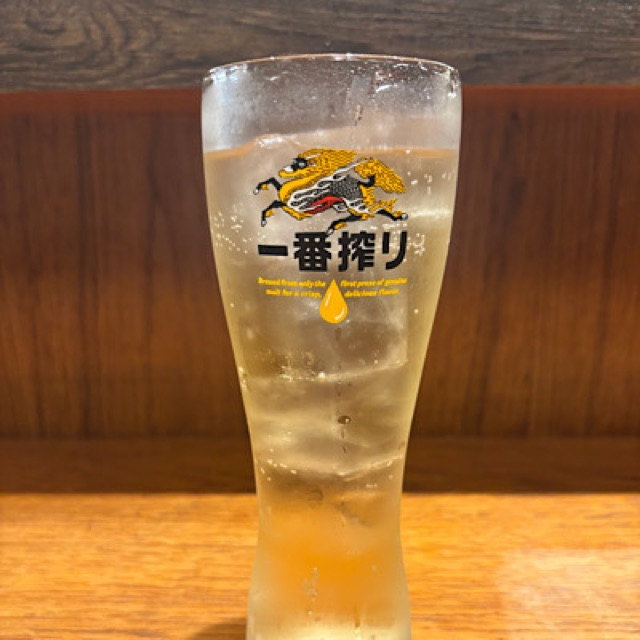
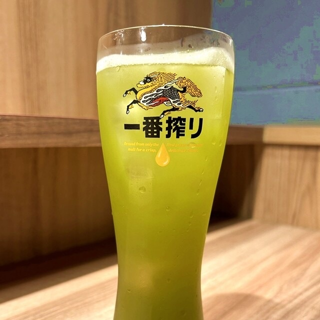
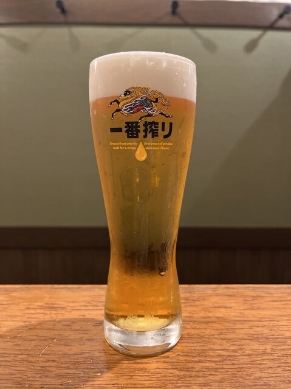
Draft beer
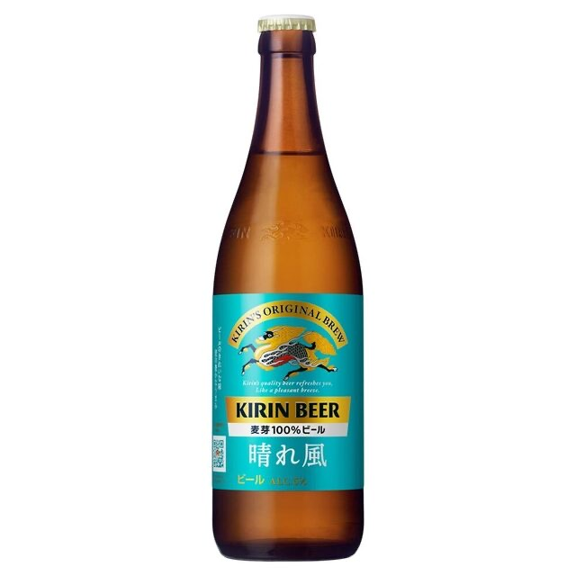
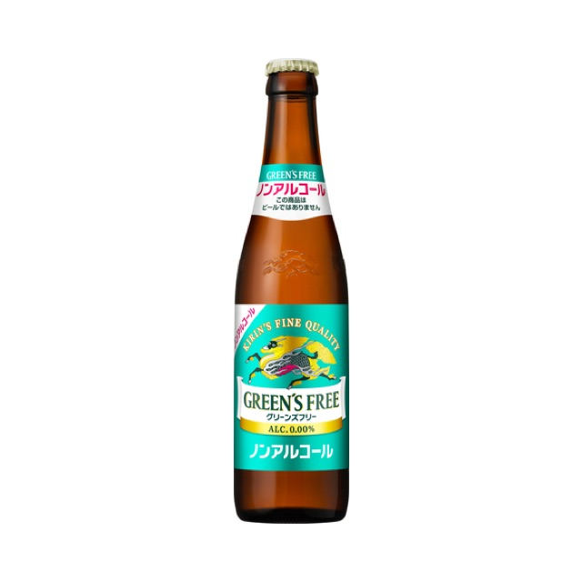
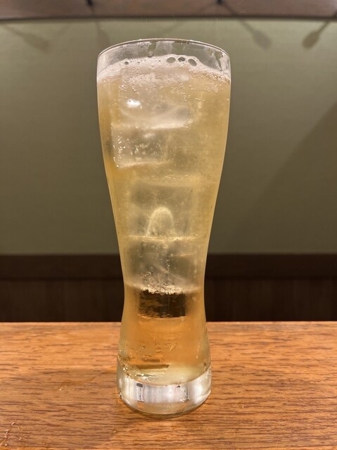
Whisky and Soda
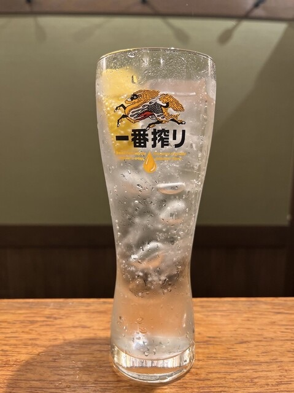
Lemon sour
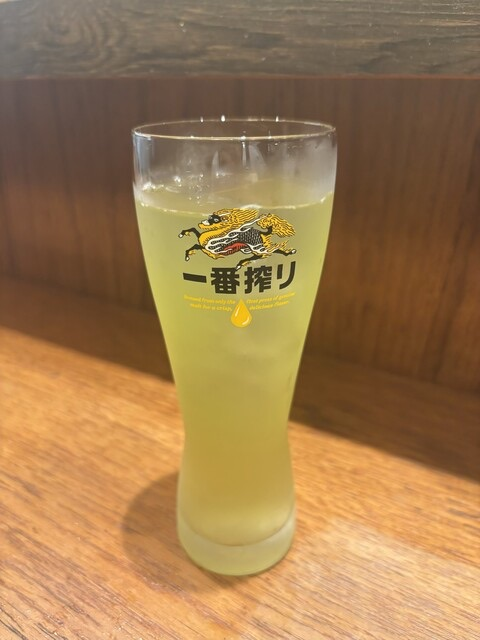
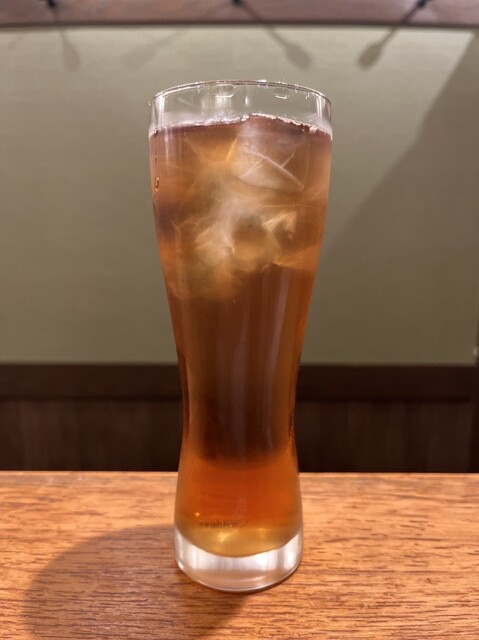
Shochu with Oolong Tea

Shochu Barley on the rock
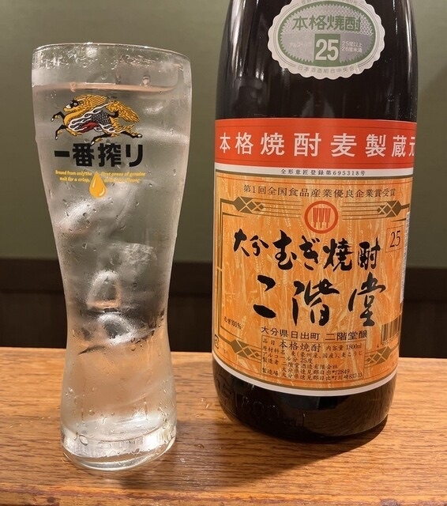
Shochu Barley and water

Shochu Barley and hot water

Shochu Barley and soda
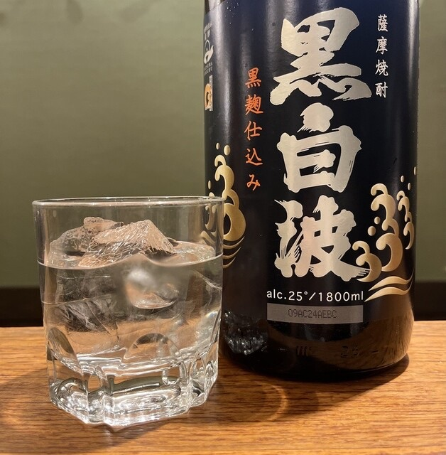
Shochu Sweet potato on the rock
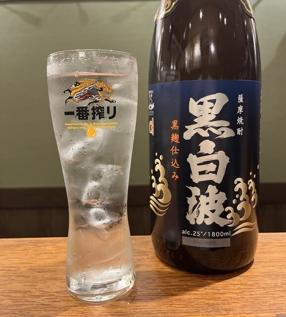
Shochu Sweet potato and water

Shochu Sweet potato and hot water
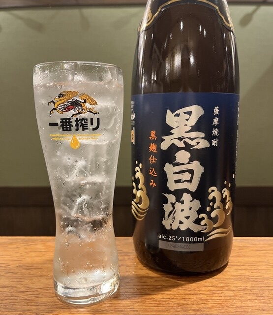
Shochu Sweet potato and soda
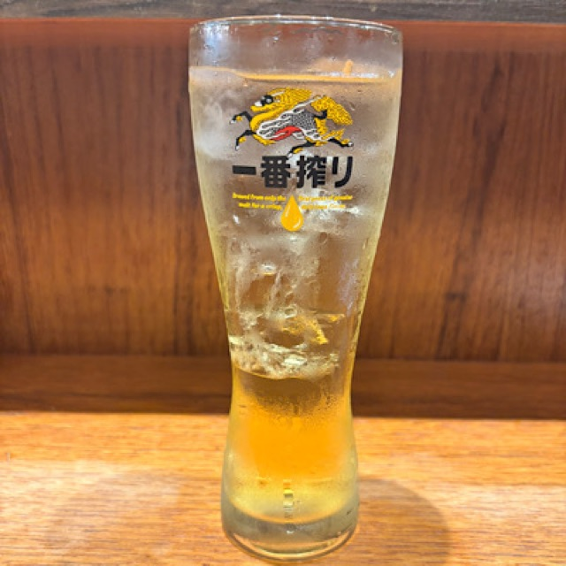
Oolong tea
Sparkling water